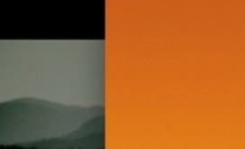

Kasada
Suara dari Tanah Tengger
Media Hindu Nusantara
Dari desa, pura, dan pegunungan hingga pelosok, kami hadir untuk mendokumentasikan kehidupan, tradisi, budaya, dan kearifan Hindu di seluruh Nusantara.
Mandala TV
Suara dari Tanah Tengger
Warisan yang terus hidup
Merawat ruang suci bersama
Artikel, kisah, dan refleksi dari Nusantara
Dengarkan cerita Nusantara
Ruang dengar untuk cerita dan kebijaksanaan
12 audio • 1:48:32
10 audio • 1:23:45

8 audio • 1:12:20
Ceramah dan wejangan para tokoh
12 audio • 1:48:32Kidung, tembang, dan suara tradisi
10 audio • 1:23:45Percakapan dan wejangan
8 audio • 1:12:20Pengetahuan dan kearifan lokal
10 audio • 1:36:50Kisah masyarakat dan tradisi
8 audio • 1:10:05Mereka yang menjaga tradisi
Penjaga Tradisi
Pemangku · Bangli, Bali
“Tradisi bukan sekadar warisan, tapi jalan hidup.”
Karangasem
Tabanan

Buleleng
Sragen
Misi Mandala
Cerita yang menghubungkan generasi

Mandala hadir untuk mendokumentasikan kehidupan, tradisi, budaya, dan kearifan Hindu Nusantara, serta menghubungkannya dengan generasi masa kini dan masa depan.
Melestarikan warisan leluhur
Mengangkat suara yang menginspirasi
Menjaga harmoni manusia dan alam
Mandala adalah media yang mendokumentasikan kehidupan, tradisi, budaya, dan kearifan Hindu Nusantara dari sudut pandang masyarakat yang menjalaninya.
Selengkapnya